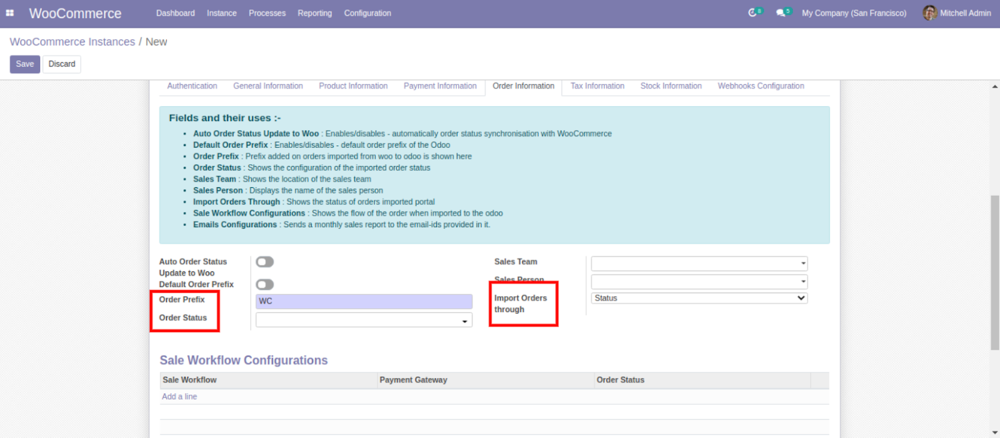

USER GUIDE
WooCommerce is an open-source eCommerce plugin on WordPress which provides a customizable platform for building your online business.
How To Configure WooCommerce Instances?
Click on “Instance” from the Woocommerce dashboard
Click on the “Create” button on the top left corner. The WooCommerce instance page opens up
Here, the fields of Store URL, Customer Key, and Customer Secret have to be filled.
Store URL
If you have access to your Wordpress site, then you can easily get your store URL from there.
- Visit the Wordpress site, and copy the store base URL and paste it in the Store URL field.
Customer Key & Customer Secret
If you already have the Customer Key & Customer URL, paste them in their respective fields. If not, you can find them in the WooCommerce Settings.
- Visit the Wordpress site.
- Click on the WooCommerce button in the left panel and then clock on the “Settings”
- In the Settings page, click on the “Advanced” button. Then click on the “Rest API” from the Page Setup menu.
-
- Click on the “Add Key” button. The Key Details section will open up. Fill in the Description here.
-
- Next, set the permission to “Read/Write”
-
- Now, generate the API key.
-
- You can now access the Customer Key & Customer Secret.
- Copy them and paste them in the fields of the WooCommerce instance page.
[Note: You would needto copy the key and secret in your notepad because once you move away from the page, the keys will not be visible anymore]
Upon filling the fields of Store URL, Customer Key, and Customer Secret, follow these steps:
Step 1 : Fill in the Connector Instance name

Step 2 : Lastly, click on the “Connect Instance” button above.
Step 3 : A success message will appear if the connection is successful to confirm the process.
Point X: When the instance has been successfully connected, you have to fill up the required details in General Information, Payment Information, Order Information, Stock Information, and Webhooks Configuration to successfully Sync your data from WooCommerce to odoo.
Points To Know
Dashboard
Inside the Dashboard, the states of all the products, variants, attributes, categories related to the Queue Jobs can be visualized. For instance, if you hover your mouse over the bar in the bar chart, you can see the counts of the tags. 063- shared on chat
In the right panel, there are buttons to display the counts of various domains. For instance, if you are syncing tags, you can see that the counter will be updated in the Tags. If you click on Tags, you will be redirected to the Tag model. Here, you can see the total number of tags, the number of synced tags, etc. If you click on any specific tag, you can see details such as Instance, Date Updated, Date Created, etc. -064
Order Information
-
There is a field called “Order Prefix”
When you import the sell order from WooCommerce, then the name of that order is Order Prefix.
-
There is a separate field for Auto Order Status Update to Woo
It updates the status of the sale order on woocommerce side whenever there is any change in the sale order on the odoo side
-
There is another field called “Order Status”
It is basically the order status that you want to fetch from WooCommerce. For example, if you select “On Hold” & “Processing”, then only those orders that are on hold or under process will be imported in the Odoo.
-
There is one more field called “Import Orders Through”
We can import orders through various processes/workflow. We can select configurations based on that(status or payment gateway) as per requirement from here. If “Status” is chosen, then the orders will be imported through status. If “Payment Gateway” is chosen, then the orders will be imported through the payment gateway. Based on this field, the AutoWorkflow id (present below) can be attached.
 -
Emails Configuration
The email ids added here will receive an email of the report generated regarding all the sales orders(for this instance), which will be updated every 24 hours.
Stock Information
There is a field for “Stock Field Type” under Stock Information. For example, if you select “Free To Use Quantity”, all the data related to it will be filled.
Webhook Configuration
Whenever there is a change such as creation/updation in the multiple processes on WooCommerce side, it can be directly reflected in the Odoo side through Webhook. It will eliminate the otherwise lengthy import through operations.
Here are the steps to set it up:
- There are 8 possible types of operations in Webhooks, that are in-built and provided to people.
- When you select a certain webhook operation, it automatically captures the URL.
- The Woocommerce ID gets assigned to it automatically and the instance is attached to it by default whenever the user clicks on the “Sync” button present on it.
- The Hook Status will change to “Active”. The Webhook will be created on the Wordpress site.
Note: The “Sync” button will change to “Toggle Status” now, and if you click on it, it will change the Hook Status to “Paused”, and one more click will change the status to “Disabled” again.
Now, whenever an order is created, the same order will automatically get synced in Odoo.
- Visit the Wordpress site and click on the “Settings”
- Click On “Advanced” and then “Webhooks” in the page setup menu. In the Webhooks segment, you can see a new order has been created with the id and the webhook name(Order Create) that you had created
Tax Information
Invoice TAX Account: It displays the tax account which is utilized for invoice tax default account Credit Note TAX Account: It displays the tax account which will be used for Credit Note/Refund tax default account
Meta Mapping
Step 1 : Click on the Instance.
Step 2 : Switch on the “Require Meta Mapping“ button above
Enter the Woo Model name.
Step 3 : Enter the Woo Meta Key.
Step 4 : Enter the Meta Mapping Field.
Step 3 : Switch on the Active button.
You have successfully generated the meta-mapping for the particular instance now and the data will be stored in Tax Id. We have covered more about meta mapping in the later part of the manual.
When the WooCommerce instance has been created, there are some other buttons present there.
Dashboard
Inside the Dashboard, the states of all the products, variants, attributes, categories related to the Queue Jobs can be visualized. For instance, if you hover your mouse over the bar in the bar chart, you can see the counts of the tags. 063- shared on chat
In the right panel, there are buttons to display the counts of various domains. For instance, if you are syncing tags, you can see that the counter will be updated in the Tags. If you click on Tags, you will be redirected to the Tag model. Here, you can see the total number of tags, the number of synced tags, etc. If you click on any specific tag, you can see details such as Instance, Date Updated, Date Created, etc. -064
Price Lists
Here, the price list related to the instance will be attached. It will be based on the currency that you have selected. There are two types of price list:
Step 1 : Sales Price List
Step 1 : Regular Price List
In WooCommerce, each product has its sales price and regular price. The sales price will be added to the Sales Price List and the regular price will be Regular Price List. They will be generated automatically.
Configure Schedulers
There are two types of Configure Schedulers:
-
WooCommerce Auto Order Import From Woo To Odoo
It will automatically import orders from WooCommerce to Odoo when activated.
-
WooCommerce Auto Order Status Update From Odoo To Woo
It will automatically update the status of the orders from Odoo to WooCommerce when activated.
Active Schedulers
From here, you can create the active scheduler by clicking on the name of the instance above followed by clicking on “Active Instance”. A confirmation message will pop up for instance activation.
Now that the instance is completely active, it can start syncing data from Odoo to WooCommerce & vice versa.
When you click on Instance from the menu at the top, you will get a Kanban view of the instance. It will have two buttons called Specific Operation & Multiple Operation. Additionally, it will have Configuration and Logs. Inside the Logs, you can see the successful logs and failed logs.
It also has a counter for Orders, Products, Coupons, and Customers. It will display the number of orders, products, coupons, and customers present in the instance. All of these counters are clickable and on clicking any of them, you will be redirected to its page.
There is also a drop-down menu. It shows the various details of Products, Sales, Delivery, and Invoices. Each detail can be clicked(except Sales Gateway & Payment Gateway) and visited for further investigation.
Synchronization Process
Specific Operation
To get specific data from WooCommerce to Odoo or export the data from Odoo to WooCommerce, you have to select the Specific Operation.
Step 1 : On clicking the Specific Operation, the WooCommerce Operations section will pop up. -
Step 2 : In the Instance field, the current instance will be selected by default. However, you can also select extra instances if you want.
Step 3 : The Operations Flow options allow you to select how the data will be synced- WooCommerce to Odoo or Odoo to WooCommerce.
Step 4 : Using the Import Operation options, you can import the specific data segment that you require like Import Products, Import Orders, Import Customers, etc.
Step 5 : After selecting the Import Operation, the Import With field will pop up. It has various filters that can be applied like Import All, Date Filter and Specific Id Filter.
Step 6 : For example, if you select “Import Tags” from the Import Operation and choose “Specific Id Filter” from Import With, you can fetch a tag with a specific WooCommerce id.
Note: The date filter and specific Id filter is not supported by all domains. Thus, whenever there is an unsupportable type, it will show that the filter is not supported.
Step 7 : After setting up the WooCommerce Operations, click on “Execute”. A confirmation message will pop up and all the data will be added to the Queue Job. It will be processed automatically and the tags will be synced with the site.
Step 8 : Click on the Processes -> Queue Jobs in the menu
Step 9 : You can see the categories, products, etc that you have added in the menu are visible here.
Multiple Operations
Here, you can perform both operations at once- Woo to Odoo and Odoo to Woo.
Step 1 : Click on the Multiple Operations and the WooCommerce Operations page will pop up.
Step 2 : Select the instance you want to operate on, in the Instance field.
Step 3 : In the Woo to Odoo segment and Odoo to Woo segment, there are Product Operations, Order Operations, Customer Operations with switch-boxes for multiple options.
Step 4 : [ Note: Both Woo to Odoo and Odoo to Woo segments have a checkbox for “Want To Select All Operations”. If you check it, then all the options will be selected at once. ]
Step 5 : After setting up the operations, click on Execute. A confirmation message will pop up and all the data will be added to the Queue Job.
Step 4 : [ Note: Both Woo to Odoo and Odoo to Woo segments have a checkbox for “Want To Select All Operations”. If you check it, then all the options will be selected at once. ]
Step 5 : After setting up the operations, click on Execute. A confirmation message will pop up and all the data will be added to the Queue Job.
Step 6 : Click on the Processes -> Queue Jobs in the menu
Step 7 : You can see the categories, products, etc that you have added in the menu are visible here.
Logs
If you click on the logs, you can select all the logs generated for successful/failed entries. If there is any anomaly, you will get the details for the failed logs regarding the mismatch. If you want to directly check the successful/failed logs, you can do it like this.
Go to Processes -> Success Logs/ Failed Logs-059, 060,061, 062


In case you are syncing customers, the customer name will be shown in the left. If you click on the Odoo Partner name, all the details regarding the customer will be visible. -065, 066, 067
Reporting
If you visit the Sales section under Reporting, the analysis for a particular sales order will be visible here. There are Graph Views and Pivot Views. The Pivot View will display the data analysis of customers, sales, etc. In the Graph view, various kinds of graphs are there to represent the analysis of a particular sales order under a WooCommerce instance. -068, 069, 070
Configuration
Inside Configuration,. by default there will be three options - Sales Workflow, Email Configuration, and Meta Mapping and when the developer mode is enabled then all the layer model manuals are there -071, 0072number here
Sales Workflow
In simple words, the operations that you define in the Sales Workflow and the related entries that you make such as Payment Journal, Debit Method, Sales Journal, etc will be saved. And, these saved configurations will then be automated for the order in the Sales Workflow. Through orders or payment gateways, auto workflow can be implemented on sales orders.
Click on Configurations -> Sales Workflow -073
Let’s suppose an order has been imported from WooCommerce to Odoo. And, you want to set up some operation (say, validation) as soon as the order is imported. You just need to go to that particular order in the Sale Workflow and switch on the Validate Order. If you want an invoice to be created for that order, switch on the “Create Invoice”. Similarly, there are options for Register Payment, Force Invoice Date and Confirm Shipment. Based on these details, the data will be fetched from that particular order. -074, 075
Email Configuration
If you require emails for a particular instance regarding sales analysis, you can do it from email configuration.
Click on Configurations -> Email Configuration -076
Step 1 : Click on “Create” Email Report Configuration -077
Step 2 : The Basic Configuration set-up page will open up. -078
Step 3 : Select the WooCommerce Instance and the pre-designated email ids for that instance will be displayed in the Email Ids field. -079
Step 4 : There are two fields: Email Subject and Email Body. If you want a custom subject and body attached with the pdf report in the mail, you can fill it from here. -080
Step 5 : Click on Save -081
The emails will be sent automatically to the designated emails with the custom subject and body that you have entered on a daily basis after a 24 hours interval.
Meta Mapping
Let’s suppose a user has added an extra plugin in WooCommerce. The meta-mapping feature will be very handy for them. It will sync data for those extra plugins because the plugin data comes under metadata.
Go to Instance ->Configuration -200
Step 1 : Turn on “Require Meta Mapping?” toggle button -201
Step 2 : Open Meta Mappings tab -202
Step 3 : Click on Edit button -203
Step 4 : Select the Woo model -204
Step 5 : Enter the Woo Meta Key (retrieve it from the description of the particular plugin that you are utilizing) -205
Step 6 : Select the Meta Mapping Field where you want to store the value regarding the Meta Key. Let’s say you want to store it in the Tax ID. -206
Step 7 : Switch on the Active button -2007
Step 8 : Click on Save Button -208
You have successfully generated the meta-mapping for the particular instance now and the data will be stored in Tax Id.
If you want the data to be synced under the Tax ID of the customer for whom the data mapping has been turned on, it is possible to do so.
Step 1 : Go to the specific Instance.
Step 2 : Click on Specific Operations. -089
Step 3 : Select Import Customers under Import Operation. -090
Step 4 : Select Specific Id Filter from Import With. -091
Step 5 : Enter the Record ID of the customer. -092
Step 6 : Click on Execute. -093
Step 7 : Now, Go to Processes -> Queue Jobs -094
Here, you will see the customer with his/her WooCommerce ID is being processed for data synchronization. Give it some time and the sync will be completed successfully.
- Visit Dashboard
- Click on Customer from the right panel.
- You can see that the customer has been added to the list. Click on his name.
- You will see that the Tax ID with its related metadata has been synced with the customer.
This is how you can sync the metadata of the plugins through Meta Mapping configuration.
[ Note: Meta mapping can also be done for products, orders in a similar way]
Push To WooCommerce/Pull From WooCommerce
Believe it or not, synchronization can be done now in seconds! The days for multiple clicks, backend operations to synchronize Odoo & WooCommerce is over now. Utilizing the Push To WooCommerce and Pull From WooCommerce buttons, syncing is done with a single click.
Step 1 : Click on the Inventory from the WooCommerce tiles present on the top left corner. -095
Step 2 : Click on Products -> Products -096
Step 3 : Let’s suppose you want to create a new product on which you want to perform the operation. Click on the “Create” button. -097
Step 4 : The Products/New Page will open up. -098
Step 5 : Enter the product name (Let’s say Rest Product) -099

Step 6 : Select the Product Type and Product Category. -100
Step 7 : Enter the other details as per requirement.
Step 8 : Click on the Save button when done. -101
Now, if you want to sync the product, you can directly do it from here by clicking on Push To WooCommerce. With just one click, you can accomplish the task by eliminating the otherwise lengthy process.
Step 1 : Click on Push To WooCommerce. -102
Step 2 : Select the Instance Ids. -103
Step 3 : Select the Website Status. -104
Step 4 : Check and set up the other details such as Set Price In Woo, Set Stock In Woo, etc. -105
Step 5 : Click on Execute when done. -106
Voila! The product will now be automatically synced with WooCommerce
In a similar fashion, you can also perform the Pull From WooCommerce operation. The product and the related data will be pulled from WooCommerce and synced with Odoo. -107
[Note: Both the operations- Push From WooCommerce and Pull From WooCommerce can be done with Product Categories , Customers, Attributes, and multiple products]
Mapping
Let’s suppose you have a product category. Ans, you want to map it with a particular WooCommerce category. Here’s how to do it:
Step 1 : Get the WooCommerce ID from the Wordpress site.
Step 2 : Click on WooCommerce Tiles(on the top left corner) -> Inventory -> Configuration -> Product Categories in the Odoo WooCommerce connector. Then open the specific Product Category you want to map. -108,109, 110
Step 3 : Click on the Action button -> Map Existing Records -111

Step 4 : The Category Record Mapping Page will open up. -112
Step 5 : You can either select Push To WooCommerce or Pull From WooCommerce under Sync Records To WooCommerce. -113
Step 6 : Select an Instance Id if you want to fill a specific instance for all the records. -114
Step 7 : If you want to select instances for each separate record, you can do so by entering the Woo Mapping Ids and their respective WooCommerce Instances below. -115
Step 8 : Click on the Confirm Mapping button when done.-116
The records will be mapped with the WooCommerce Instances accordingly. If you go to the Queue Jobs, you will see that the mapping has been added there.
[Note: You can map several records at once for mapping purposes in a similar way. You can also map Products, Customers, Categories, etc in a similar way]